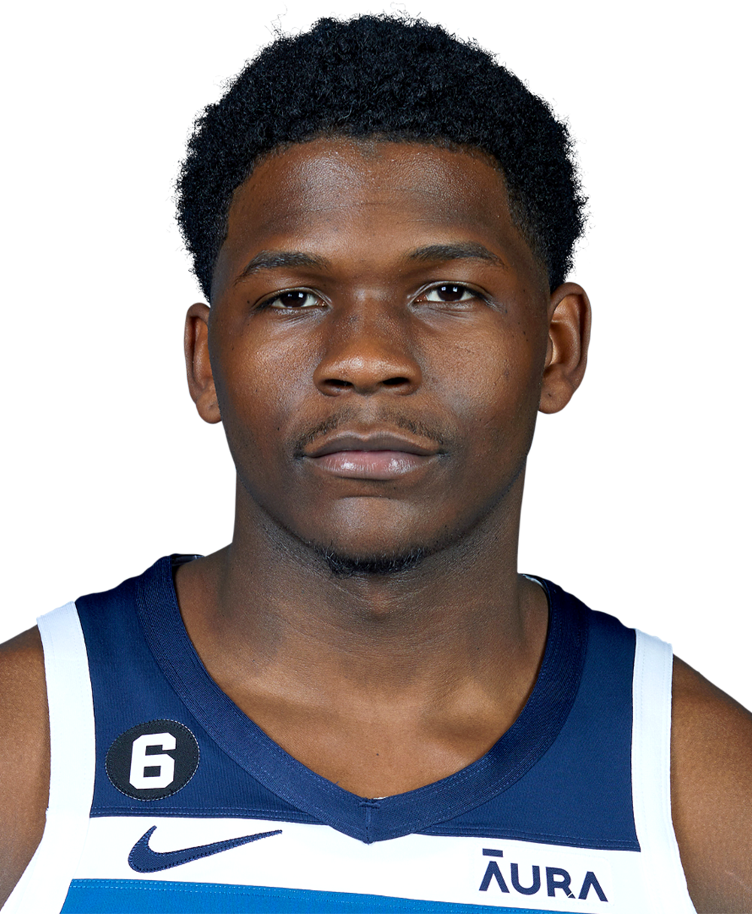

Anthony Edwards

- Age: 21
- Born: August 5, 2001 Atlanta, Georgia, U.S
- College: Georgia
- Height: 6 ft 4 in
- Weight: 225 lb
- Playing career: 2020–present
Twitter
Instagram
Karl-Anthony Towns

- Age: 27
- Born: November 15, 1995 Edison, New Jersey, U.S.
- College: Kentucky
- Height: 7 ft
- Weight: 248 lb
- Playing career: 2015–present
Twitter
Instagram
Rudy Gobert

- Age: 30
- Born: June 26, 1992 Saint-Quentin, France
- Former Team: Cholet
- Height: 7 ft 1 in
- Weight: 258 lb
- Playing career: 2011–present
Twitter
Instagram
D'Angelo Russell
- Age: 26
- Born: February 23, 1996 Louisville, Kentucky, U.S.
- College: Ohio State
- Height: 6 ft 4 in
- Weight: 193 lb
- Playing career: 2015–present
Twitter
Instagram